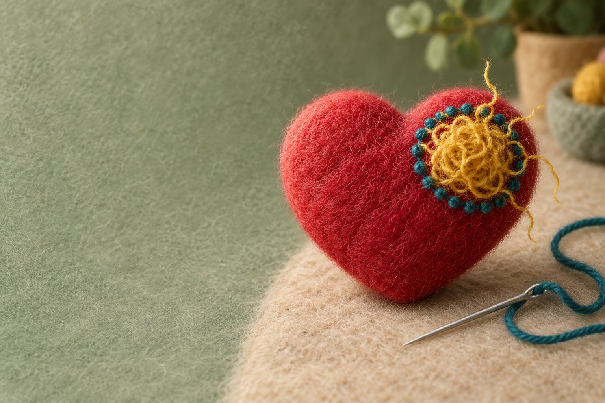

心房顫動電燒是什麼？
心房顫動會讓心跳亂掉，也會讓中風風險變高。電燒不是每個人的第一步，但對症狀明顯、吃藥控制不好的人，是值得認真了解的選項。

重點摘要
心房顫動電燒（導管消融）是用導管在左心房的肺靜脈開口周圍做出一圈隔離，讓亂電傳不進心房。主要考慮電燒的，是有症狀、而且藥物效果不好或無法耐受的人；陣發性（會自己停）的效果通常比持續性好。電燒之後，抗凝血劑至少還要吃兩個月，之後吃不吃看中風風險分數，不是看電燒有沒有成功。
撰寫：林柏霖醫師（新竹馬偕紀念醫院心臟內科）｜更新 2026-11-24
心房顫動是什麼？
正常的心跳由右心房上方的「竇房結」發號施令，一下一下很規律。心房顫動時，心房不再規律收縮，而是以每分鐘約三百五十到六百次的速度亂顫，傳到心室的心跳因此快慢不一。
常見的感覺是心悸、喘、容易累、頭暈；也有大約三分之一的人完全沒有感覺，是健康檢查或量血壓時才發現心跳不規則。
心房顫動主要的危險是中風。血液在亂顫的心房裡流得慢，容易形成血塊；心房顫動病人的中風機率，平均約為沒有心房顫動者的五倍，而且年紀越大、合併高血壓、糖尿病、心衰竭或曾經中風，風險越高。
為什麼電燒有用？
多數心房顫動的亂電，是從肺靜脈開口附近發出來的。肺靜脈是把血從肺部帶回左心房的四條血管，開口就在左心房的牆上。
電燒的目標叫「肺靜脈隔離」：在每條肺靜脈開口周圍做出一圈細細的疤痕組織。疤痕不導電，亂電就被關在圈圈外面，傳不進心房。
誰適合考慮電燒？
- 有心悸、喘、累等症狀，而且至少一種抗心律不整藥物效果不好，或副作用吃不消。
- 陣發性心房顫動（發作後會自己停）效果通常比持續性好。
- 2024 年歐洲心臟學會指引也把電燒列為部分陣發性病人的優先選項；是否可以不先吃藥、直接電燒，請依症狀與個人狀況和醫師討論。
沒有症狀的人，重點通常不是電燒，而是先評估中風風險、決定要不要吃抗凝血劑。
射頻、冷凍、脈衝場，差在哪裡？
三種方式的目標一樣，都是把肺靜脈隔離起來，差別在用什麼能量、怎麼做出那一圈。研究裡三種方式的效果相近，選哪一種要看心房顫動的型態、心臟構造和醫院的設備。
| 項目 | 射頻消融 | 冷凍消融 | 脈衝場消融 |
|---|---|---|---|
| 能量 | 導管尖端加熱 | 氣球內灌入低溫冷媒 | 極短的高電壓脈衝 |
| 做法 | 一點一點燒，連成一圈，通常搭配 3D 定位系統 | 氣球頂在肺靜脈開口，一次凍出一圈 | 讓心肌細胞失去功能，一次處理一圈 |
| 特點 | 也能處理肺靜脈以外的複雜區域 | 主要用在肺靜脈隔離 | 研究中觀察到對食道等周邊組織的熱傷害較少，手術時間通常較短；它也有自己需要注意的風險 |
各研究的結果不完全相同，沒有哪一種適合所有人。
手術當天會發生什麼？
- 從大腿根部的股靜脈放入導管，沿著血管上到右心房。
- 在心房中間的隔膜開一個小孔（房中隔穿刺），讓導管進到左心房。
- 在每條肺靜脈開口周圍完成隔離，確認亂電傳不進來。
依醫院與術式，可能在局部麻醉加鎮靜下進行，也可能採全身麻醉，術前會說明。住院多為一到三天，依醫院與術式而定。
電燒有哪些風險？
電燒是侵入性治療，嚴重併發症不常見，但確實存在，術前我會逐項說明。可能的風險包括：
- 大腿穿刺處出血或瘀血腫塊。
- 心包膜填塞：心臟外圍積血，需要緊急引流。
- 中風或血栓。
- 食道或膈神經受傷（膈神經負責呼吸時橫膈的動作）。
- 肺靜脈狹窄。
每種能量的風險組合不太一樣，適合哪一種、風險高低，要依心臟構造和整體健康狀況評估。
術後三個月，常被誤會的兩件事
又心悸了，不一定是失敗
術後頭三個月，心臟組織還在修復，偶爾出現心律不整很常見，部分人到六個月才完全穩定。這段時間的發作，不能拿來判斷手術成不成功，回診時讓醫師看心電圖再說。
抗凝血劑不能自己停
不論中風風險高低，術後抗凝血劑至少要吃兩個月。兩個月之後要不要繼續，看的是個人的中風風險分數，不是看電燒有沒有成功。心跳恢復規律，不代表中風風險就跟著歸零。
電燒的效果怎麼看？
陣發性心房顫動電燒後的效果，明顯比持續性好；持續性的人有一部分需要第二次電燒。網路上看到的效果數字差很多，是因為每個研究對「成功」的定義不同：有沒有算加藥、有沒有扣掉術後三個月、追蹤多久，都會讓數字差上十幾個百分點。
比起一個平均數字，我更習慣在門診拿病人自己的心電圖、心臟超音波和發作型態，一起估算個別的情況。
健保怎麼給付？
- 射頻電燒使用的立體定位灌注冷卻式導管由健保給付；具壓力感應功能的 3D 導管屬自付差額。
- 冷凍消融導管屬自付差額（限用於心房顫動的肺靜脈隔離），健保按傳統電燒導管的給付額支付，超過的差額由病人自付。
- 脈衝場消融導管自 2025 年 12 月 1 日起也納入健保自付差額，同樣限用於心房顫動的肺靜脈隔離。
實際自付金額依醫院與導管型號而定，請向院方索取收費表，也可以到健保署「自費醫材比價網」查詢。
脈衝場消融（PFA）專題
這兩年心房顫動電燒備受關注的新做法，我拆成六篇，一篇講清楚一件事：
延伸閱讀
常見問題
電燒之後，抗凝血劑就可以停了嗎？
不行自己停。術後至少要吃兩個月，之後要不要繼續看中風風險分數，和電燒成不成功是兩件事。
電燒後一個月又心悸，是不是失敗了？
不一定。術後頭三個月心臟組織還在修復，偶爾發作很常見，部分人到六個月才穩定。請記錄發作時間，回診讓醫師看心電圖。
我沒有症狀，也需要電燒嗎？
電燒主要是為了改善症狀。沒有症狀的人，最重要的是評估中風風險、決定要不要吃抗凝血劑。
心房顫動電燒要住院幾天？要全身麻醉嗎？
電燒住院多為一到三天。依醫院與術式，可能是局部麻醉加鎮靜，也可能是全身麻醉，術前會說明。
參考資料
- 中華民國心律醫學會：心房顫動衛教
- 健保署：全民健康保險特殊材料給付規定（B104-3 冷凍消融導管、B104-7 脈衝消融導管）
- 健保署：健保自付差額特材類別
- 健保署 114 年 9 月特殊材料共同擬訂會議議程（脈衝消融導管）
- 2024 歐洲心臟學會心房顫動診療指引（Eur Heart J）
- 2017 HRS／EHRA／APHRS 等五學會：心房顫動導管與外科消融專家共識（術後抗凝血、三個月空白期、併發症）
- 無症狀與有症狀心房顫動結果比較：系統性回顧（J Clin Med 2021）
每個人的病情不同，本頁不能取代門診評估。想知道自己適不適合，請帶著過去的心電圖與檢查報告來門診討論。

無導線節律器
無導線心臟節律器（也叫無導線心律調節器）把整套節律器縮成一顆膠囊大小，直接放進心臟裡：胸前沒有傷口、沒有皮下口袋，也沒有穿過血管的導線。現在它不只一種，有放在右心室的心室型、放在右心房的心房型，還有心房和心室各放一顆的雙腔系統。
繼續看 →桃竹苗就近看診：#桃園#中壢#楊梅#新屋#龍潭#新竹市#竹北#竹東#湖口#新豐#寶山#芎林#竹南#頭份#苗栗